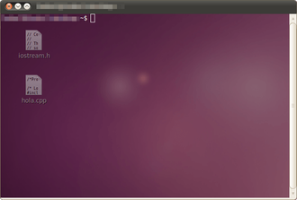
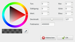

Transparentes Terminal
Dieser Artikel wurde für die folgenden Ubuntu-Versionen getestet:
Dieser Artikel ist größtenteils für alle Ubuntu-Versionen gültig.
Zum Verständnis dieses Artikels sind folgende Seiten hilfreich:
 Systemverwaltungsaufgaben werden oft in einem Terminal erledigt. Mancher möchte ein Terminal auf seiner Arbeitsfläche immer präsent haben. Dieses Terminal darf dann auch gerne durchsichtig, also transparent, sein. Hier werden Terminal-Programme beschrieben, die mit transparentem Hintergrund dargestellt werden können. Dabei muss allerdings zwischen "echter" Transparenz, die nur mit Hilfe eines Composite-Managers möglich ist, und "Pseudotransparenz" (gilt nur für das Terminalfenster) unterschieden werden.
Systemverwaltungsaufgaben werden oft in einem Terminal erledigt. Mancher möchte ein Terminal auf seiner Arbeitsfläche immer präsent haben. Dieses Terminal darf dann auch gerne durchsichtig, also transparent, sein. Hier werden Terminal-Programme beschrieben, die mit transparentem Hintergrund dargestellt werden können. Dabei muss allerdings zwischen "echter" Transparenz, die nur mit Hilfe eines Composite-Managers möglich ist, und "Pseudotransparenz" (gilt nur für das Terminalfenster) unterschieden werden.
Soll das transparente Terminal auf allen Arbeitsflächen präsent sein, sind die Mechanismen des jeweiligen Fenstermanagers oder der Desktop-Umgebung zu nutzen.
GNOME 3¶
 Im GNOME-Terminal kann man einen transparenten Hintergrund ganz leicht aktivieren:
Dazu ist ein neues Profil anzulegen:
"Bearbeiten -> Profile -> Neu"
einen neuen Profilnamen angeben
Danach kann man die Eigenschaften dieses Profils bearbeiten.
Im Reiter "Hintergrundtyp" kann dann die Transparenz festgelegt werden.
Möchte man immer dieses Profil benutzen, ist dieses in "Bearbeiten -> Profile -> Beim Starten eines neuen Terminals verwendetes Profil" zu aktivieren.
Hinweis:
Ab GNOME 3.8 (eigentlich ab inoffiziellem 3.7) wird Transparenz im Terminal nicht mehr unterstützt, im Menü ist die Option jedoch noch vorhanden! Der Grund ist, dass der Code fehlerhaft und nicht performant war und die Entwicklungsprioritäten anders gesetzt sind (Bugzilla #698544  ).
).
KDE¶
Seit Ubuntu 8.10 verwendet Konsole echte Transparenz. Für eine transparente Konsole müssen daher unter "Systemeinstellungen -> Arbeitsfläche" die Arbeitsflächeneffekte aktiviert sein. Anschließend kann ein Farbschema eingerichtet werden:
"Einstellungen -> Profile verwalten -> Profil bearbeiten",
im Reiter "Erscheinungsbild" den Button "Bearbeiten" wählen.
Mit dem Schieberegler die gewünschte "Hintergrund-Transparenz" festlegen.
Xfce¶
Das Xfce4-terminal ist das Terminal-Programm von Xfce. Natürlich kann man dieses Terminal-Programm auch in anderen Umgebungen nutzen. So aktiviert man einen transparenten Hintergrund:
Menü "Bearbeiten -> Einstellungen -> Aussehen -> Hintergrund"
im Pulldown-Menü "Transparenter Hintergrund" auswählen.
Mit einer bestimmten Geometrie, ohne Menüleiste und ohne Rahmen wird xfce4-terminal so gestartet [1]:
xfce4-terminal --hide-menubar \ --hide-borders \ --geometry=80x24+5+35
Man kann auch ein Skript (Wrapper) schreiben, das diesen Befehl ausführt. In folgendem Beispiel heißt das Skript term.wrapper:
#!/bin/sh #term.wrapper xfce4-terminal --hide-menubar \ --hide-borders \ --geometry=80x24+5+35
Nachdem dieses Skript ausführbar gemacht wurde, ist es in ein Verzeichnis zu kopieren, das im $PATH des Benutzers ist (vorzugsweise ~/bin/ oder /usr/local/bin/).
LXDE¶

Wer LXTerminal nutzt, erreicht eine Pseudotransparenz über "Bearbeiten -> Einstellungen -> Stil -> Hintergrund". Dann ändert man nur die Deckkraft von 255 auf z.B. 127.
MATE¶
Um eine Pseudotransparenz im MATE-Terminal zu aktivieren, wählt man den Menüpunkt "Bearbeiten -> Profileinstellungen -> Hintergrundtyp" und dann "Transparenter Hintergrund" aus. Über einen Schieberegler kann anschließend die Stärke des Effekts angepasst werden.
Sonstige¶
Eterm¶
Eterm kann man per
Eterm --trans
mit transparentem Hintergrund starten.
Vollständige Transparenz, sodass also auch keine Fensterdekorationen angezeigt werden, erreicht man mit weiteren Argumenten. Da die Positionierung dann komplizierter wird, ist im folgenden Beispiel auch diese per Argument -g angegeben:
Eterm --trans --borderless -g 100x24+5+470 --scrollbar false --buttonbar false -v
Wenn einen noch die Anzeige in der Kontrolleiste stört kann man diese mit Hilfe vom kstart umgehen:
kstart --alldesktops --keepbelow --skiptaskbar Eterm -Ox --geometry 80x25+60+300 --scrollbar false --buttonbar false --font4
 Übersichtsartikel
Übersichtsartikel- Erstellt mit Inyoka
-
 2004 – 2017 ubuntuusers.de • Einige Rechte vorbehalten
2004 – 2017 ubuntuusers.de • Einige Rechte vorbehalten
Lizenz • Kontakt • Datenschutz • Impressum • Serverstatus -
Serverhousing gespendet von